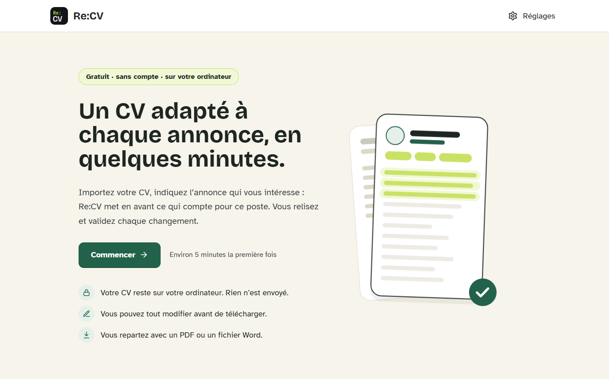
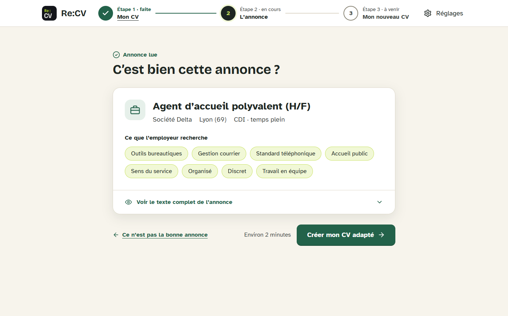
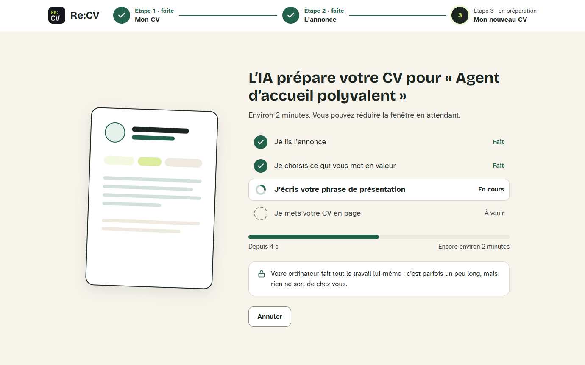

Gratuit · sans compte · sur votre ordinateur
Un CV adapté à chaque annonce, en quelques minutes.
Importez votre CV, indiquez l’annonce qui vous intéresse : Re:CV met en avant ce qui compte pour ce poste. Vous relisez et validez chaque changement.
Télécharger pour Windows Windows 10 et 11 · gratuit · open source
- Votre CV reste sur votre ordinateur avec le modèle intégré. Rien n’est envoyé.
- Vous pouvez tout modifier avant de télécharger.
- Vous repartez avec un PDF ou un fichier Word.
Trois étapes, environ cinq minutes
-

1 Importez votre CV
Déposez votre CV (PDF ou Word). Re:CV vous montre ce qu’il a compris, et vous corrigez si besoin.
-

2 Indiquez l’annonce
Collez un lien ou le texte de l’offre. Re:CV repère le poste et ce que l’employeur recherche.
-

3 Relisez et téléchargez
Le CV adapté s’affiche en grand. Vous choisissez une mise en page, vous ajustez, puis vous le téléchargez.
Fidèle à votre parcours, jamais inventé
Re:CV choisit, réordonne et reformule uniquement ce qui figure déjà dans votre CV. Vos intitulés, employeurs, dates, formations et langues sont recopiés tels quels.
- Quand l’annonce demande une compétence que votre CV ne mentionne pas, elle est proposée dans une case décochée : elle n’entre dans le CV que si vous la cochez.
- Vous gardez la main sur chaque expérience : vous pouvez en retirer ou en remettre.
- Des mises en page lisibles par les logiciels de recrutement : du vrai texte, des titres standards, pas de tableau.
Vos données restent chez vous
Re:CV s’installe sur votre ordinateur. Avec le modèle d’IA intégré, tout le travail se fait sur votre machine : votre CV et les annonces ne sont envoyés nulle part.
Vous choisissez le moteur
- Modèle intégré : 100 % local, aucun compte.
- Ollama : un modèle servi sur votre ordinateur.
- Service en ligne avec votre propre clé (OpenAI, Mistral, OpenRouter…) : plus rapide, mais votre CV et l’annonce sont alors envoyés à ce service, ce que l’application vous indique clairement.
Neuf mises en page
Au format PDF ou Word, avec ou sans photo.
- Classique
- Moderne
- Élégant
- Bandeau
- Latéral
- Pastel
- Capsule
- Éditorial
- Chronologie
Télécharger Re:CV
Gratuit, sans compte, pour Windows 10 et 11.
Windows affiche un avertissement à l’installation ?
L’installateur n’est pas encore signé : Windows SmartScreen peut afficher un avertissement la première fois. Cliquez sur « Informations complémentaires », puis sur « Exécuter quand même ». Le code source est public et vérifiable.